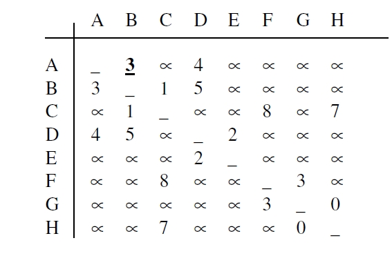
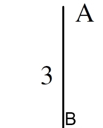
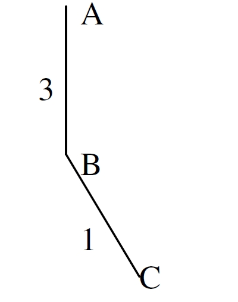
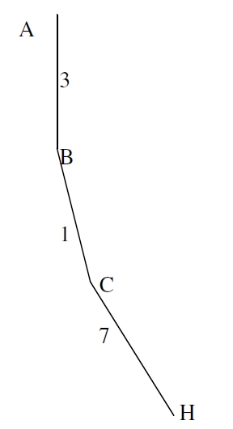
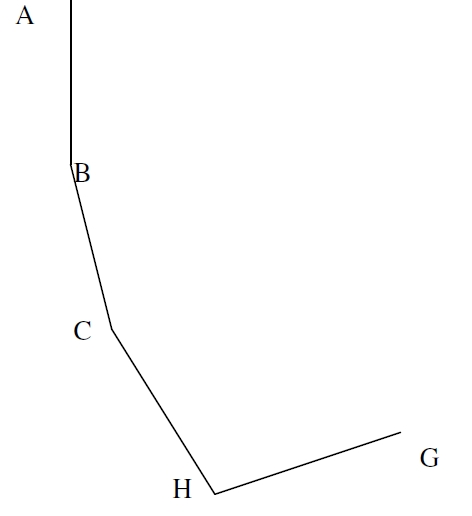
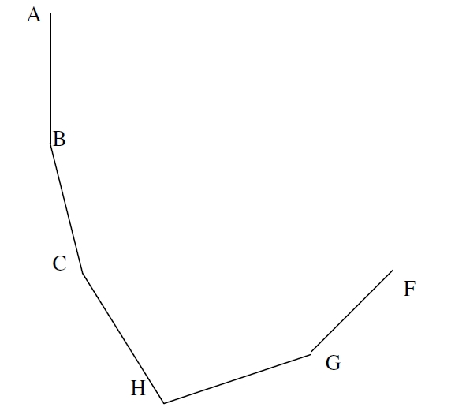
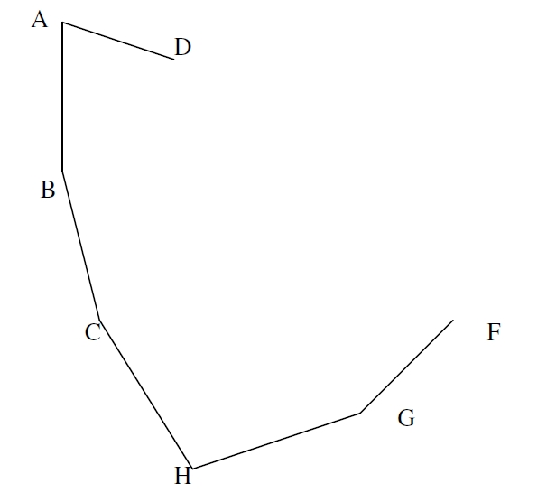
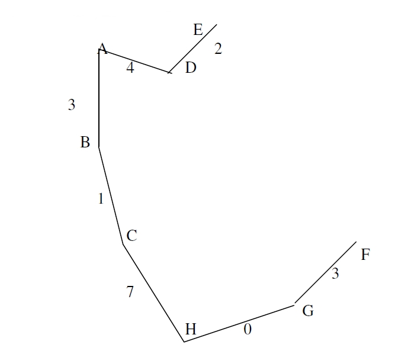

Prims's Algorithm
Prim's algorithm is a greedy algorithm.Prim's algorithm
constructs the minimum-cost spanning tree edge by
edge.The difference between Prim's algorithm and
Kruskal's algorithm is that the set of selected edges
forms a tree at all times when using Prim's algorithm
while a forest is formed when using Kruskal's.In Prim's algorithm, a least-cost edge (u, v) is added
to T such that T U {(u, v)} is also a tree. This
repeats until T contains n-1 edges.
algorithm.
Algorithm:
Prim(G,w)
For each vertex u ∈ V[G]
do key[u] = ∞
π[u] = NIL
key[r] = 0
Q = V[G]
While Q ≠ Φ
Do u = Extract-Min(Q)
For each v ∈ adj[u]
do if v ∈ Q and w(u,v) < key [v]
then π[v] =u
key[v] =w(u,v)
Example:

The cost adjacency matrix is:

Start with 1 and pick the smallest entry in row 1 which is (A,B)

Now select vertex C and edge (B, C)

Now Select (C, H) edge

Now select edge (H, G)

Now select the edge (G,F)

We cannot take edge (F, C) as it will make a cycle. so we will take the edge AD.

Now select the edge ( D, E)
Our spanning tree is:

Min cost = 2+4+3+1+7+0+3= 20 units